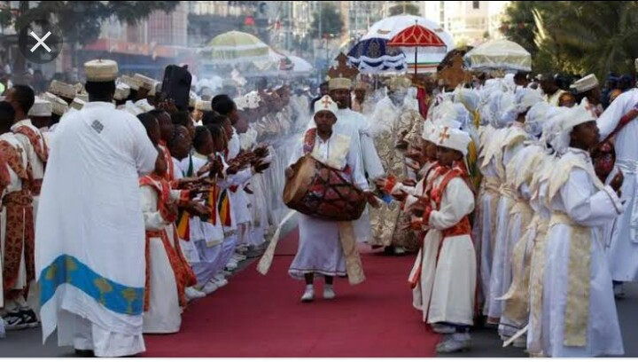

One of the biggest celebation in Ethiopia is "Timkat". It is celebrated on january 19th or 20 in a leap
year, corresponding to the 11th day of terr in the Ge'ez calendar.Timkat celebrates the baptism of jesus
in the river jordan.. This festival is best known for its ritual reenactment of baptism (similar to
such reenactments performed by numerous Christian the Holy Land when they visit the Jordan).
During the ceremonies of Timkat, the Tabot, a model of the Ark of the Covenant, which is present on every
Ethiopian altar (somewhat like the Western altar stone), is reverently wrapped in rich cloth and borne in
procession on the head of the priest.The Tabot, which is otherwise rarely seen by the laity, represents
the manifestation of Jesus as the Messiah when he came to the Jordan for baptism. The Divine Liturgy is
celebrated near a stream or pool early in the morning (around 2 a.m.). Then the nearby body of water is blessed
towards dawn and sprinkled on the participants, some of whom enter the water and immerse themselves, symbolically
renewing their baptismal vows.
Timkat is widely celebrated across Ethiopia, but the biggest and most spectacular Timkat celebrations take
place in the historic city of Gondar.By noon on Timqat Day a large crowd has assembled at the ritual site,
those who went home for a little sleep having returned, and the holy ark is escorted back to its church
in colorful procession and festivities. The clergy, bearing robes and umbrellas of many hues, perform
rollicking dances and songs; the elders march solemnly with their weapons, attended by middle-aged men
singing a long-drawn, low-pitched haaa hooo; and the children run about with sticks and games.

Dressedup in their finest, the women chatter excitedly on their one real day of freedom in the year. The young
raves leap up and down in spirited dances, tirelessly repeating rhythmic songs. This celebration is also
registered in UNESCO as an intangible heritage. When the holy ark has been safely restored to its dwelling
-place, everyone goes home for feasting
The other famous celebration in Ethiopia is Irreecha.Irreecha (also called Irreessa or Dhibaayyuu), is
thanksgiving holiday of the Oromo people in Ethiopia. The Oromo people celebrate Irreecha to thank
Waaqa (God) for the blessings and mercies they have received throughout the previous year. The Irreecha
festival is celebrated every year at the beginning of Birraa (Spring), new season after the dark and
rainy winter season. It is attended by hundreds of thousands people. The thanksgiving is celebrated
at sacred lakes across Oromia and Hora Harsadi, Bishoftu, Oromia as a whole. Once at the lake, festival-
goers immerse the green grass and the flowers they are carrying and sprinkle themselves.
Many people interpreted the Irrecha festival of the Oromo people, as a festival of difficulty period
between the month of June and September. But the reality is not as many as exaggerated today. But the
Irrecha festival of the festival of welcoming the expected seeds and friutes of prosperity, and peace.
The Oromo people also consider the winter rainy season of June to September is a time of difficulty for
communications, with families, friends due to heavy rain which could cause swelling rivers and floods
that may drown people, cattle, crop, and flood homes. Also, family relationships will suffer during
winter rain as they can't visit each other because of swelling rivers. In addition, winter time could
be a time of hunger for some because of the fact that the previous harvest collected in January is
running short and the new harvest is not ripe yet. Because of this, some families may endure food
shortages during the winter. In Birraa (Spring in Oromoland), this shortage ends as many food crops
especially maize is ripe and families can eat their fill. Other crops like potato, barley, etc. will
also be ripe in Birraa. Some disease types like malaria also break out during rainy winter time.
Because of this, the Oromos see winter as a difficult season. It does not mean the Oromo people hate
rain or the winter season at all. Even when there is a shortage of rain, they pray to Waaqa (God) for
rain.